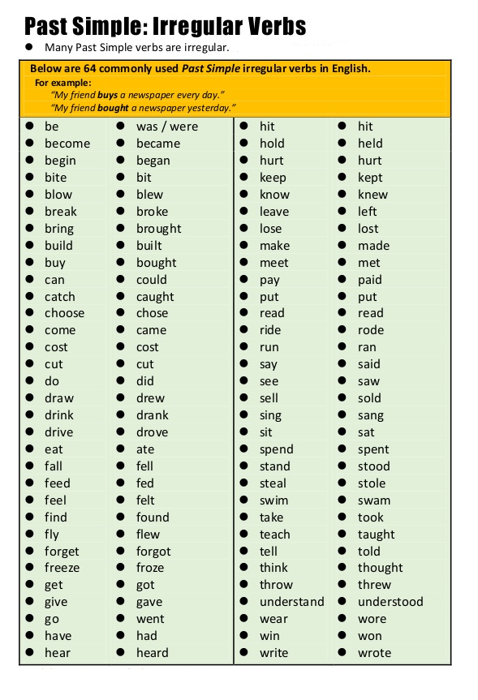

How do we form the simple past?
Analyze the following information and answer the activities.
|
AFFIRMATIVE To form affirmative sentences in simple past, we need to take into consideration the regular and irregular verbs. The past simple of regular or irregular verbs, in their affirmative form, have this structure: subject + conjugated verb + rest of the sentenceRegular: we add -ed at the end of the verb: Examples: I baked delicious biscuits yesterday. I studied a lot for the exams. Irregular: The irregular verbs change. Examples: I got home at midnight. My best friend lost her wallet. |
English has two types of verbs in the past : regular and irregular verbs. Here are the rules for these verbs.


There are no specific rules for irregular verbs, you just have to memorize them. There are many irregular verbs, here is a list of some of the most common irregular verbs. If you do not know the meaning of any of these verbs, use a dictionary or click here.
